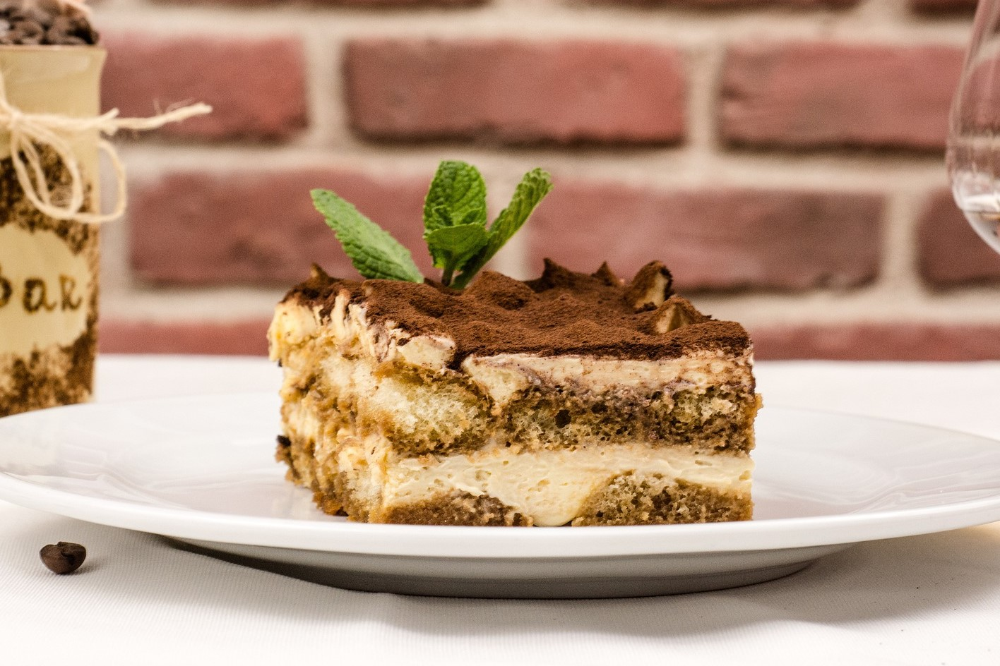

Tiramisu Recept
A tiramisu egy könnyen elkészíthető sütés nélküli olasz sütemény. A legelterjedtebb ízesítése a kávés és a kakaós. Sokféle tálalása létezik. Kínálható tejszínhabbal, gyümölcsökkel és egyéb más édes finomságokkal.

Elő- és elkészítési idő
5 + 30 perc
Nehézségi szint
egyszerű
Költség
$
Mennyiség
15 főre
Kalória
~270 kcal / adag
Hozzávalók
- 50 dkg Mascarpone
- 15 dkg kristálycukor
- 20 dkg babapiskóta
- 4 db tojás
- 1 csomag vaníliacukor
- 1 dl rum
- 1 bögre kávé
- kakaópor
Elkészítés
- A tojások sárgáját a sima és a vaníliás cukorral habosra keverjük, miközben a Mascarpone-t és a rumot is hozzáadjuk.
- Ezután a tojás fehérjét kemény habbá verjük és óvatosan belekeverjük.
- A babapiskótákat beáztatjuk a lefőzött kávéba és egy nagyobb tál aljába rakosgatjuk őket szorosan egymás mellé.
- Az előzőleg elkészült krém felét egyenletesen rákenjük, majd ismét egy réteg áztatott babapiskóta réteg jön és végül a tetejére a maradék krém.
- Végül kakaóport szitálunk a tetejére és hűtőben hagyjuk állni az egészet 1 órát.